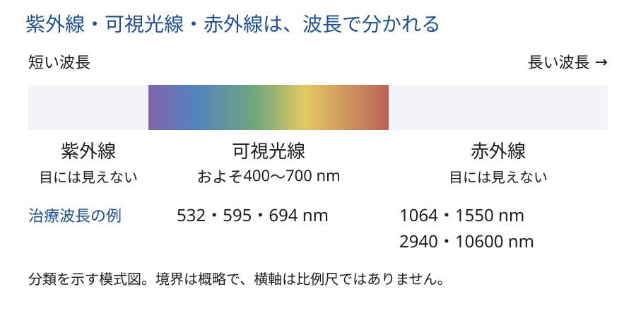
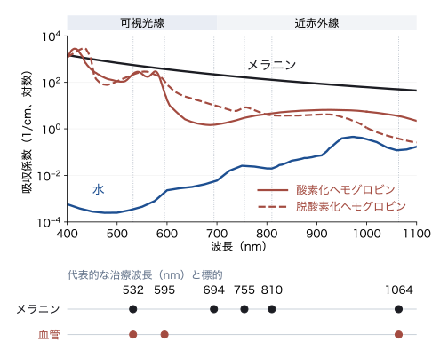
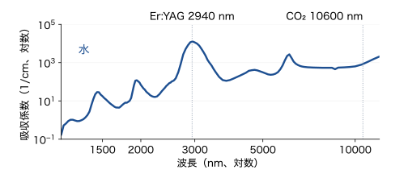
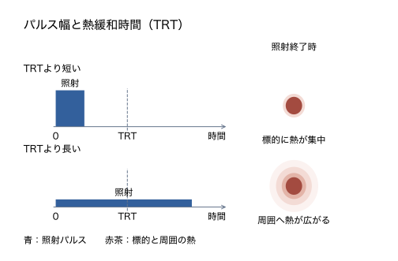
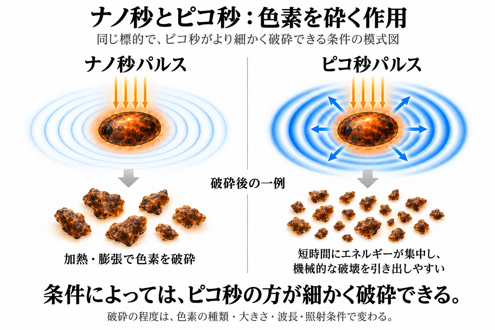
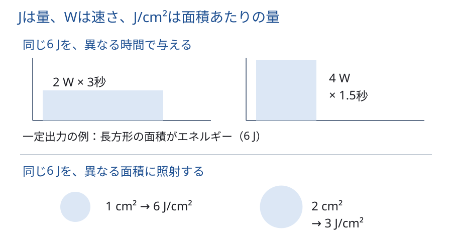
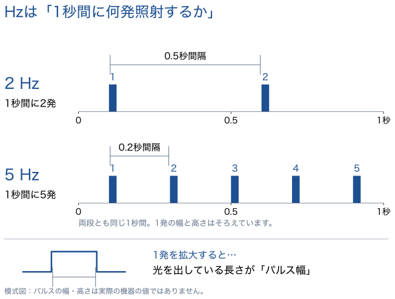

美容皮膚科 ／ デバイス
レーザー・光治療の基本クロモフォアと選択的光熱融解
公開 2026-10-29
この章では、紫外線・可視光線・赤外線の違いから始め、光が皮膚に吸収され、熱や機械的な作用を起こすまでをつなげます。熱による細胞の傷害と修復はデバイスによる熱治療で扱います。
この章の一言
レーザー・光治療では、標的に十分な作用を与えながら、周囲組織への損傷を抑えるように照射条件を組み合わせます。 波長はクロモフォア（光を吸収する物質）への吸収と到達深度に、パルス幅は熱の広がりや光機械作用に、フルエンス（単位面積あたりの照射エネルギー）は標的に与えるエネルギー量に関わります。同じ波長でも、これらの条件によって組織に起こる変化は異なります。
照射条件の全体像
レーザー・光治療の作用を考えるときは、次の条件を組み合わせます。波長から順に、それぞれが何を変えるかを見ていきます。
| 条件 | 何を表すか | 組織への作用を考えるポイント |
|---|---|---|
| 波長 | 光の種類を表す指標（nm）。波長によって、吸収されやすい物質や皮膚への届き方が異なる | 何に吸収され、どの深さまで届くか |
| パルス幅 | 1回の照射で光が出ている時間（ms・ns・ps） | 照射中に熱や圧力がどの程度広がるか |
| エネルギー・パワー | エネルギーは与える総量（J）、パワーは単位時間あたりに与える量（W） | 標的へ与えるエネルギー量と、与える速さ |
| スポット径 | 皮膚に照射する光の直径（mm）。エネルギーを照射面積で割った値がフルエンス（J/cm²） | 同じエネルギー（J）なら、小さいほどフルエンスが高くなる。同じ波長・同じフルエンスなら、大きいほど深部へ光が届きやすい |
| 繰り返し周波数・照射間隔 | 周波数は1秒あたりのパルス数（Hz）、照射間隔は次のパルスまでの時間 | 同じ部位に熱が蓄積するか、次の照射までに冷めるか |
| 冷却 | 照射前・照射中・照射後に皮膚から熱を逃がすこと | 表皮の熱損傷を抑えながら、標的に作用させる |
1 波長：何に吸収され、どこまで届くか
光は電磁波の一種です。波の山から次の山までの距離を波長といいます。

波長の短い側から、紫外線・可視光線・赤外線と並びます。可視光線の範囲はおよそ400〜700 nmで、短い側は紫、長い側は赤として見えます。境界は概略で、厳密な区分は定義によって異なります。紫外線と赤外線は目には見えません。NASA：電磁波の分類
LASERは、Light Amplification by Stimulated Emission of Radiation（誘導放出による光増幅）の略です。 レーザーはほぼ単一の波長の光を用い、その波長の吸収特性を利用して標的を狙います。一方、IPL（intense pulsed light）は、フラッシュランプが発する幅広い波長帯の光を用います。フィルターで通す波長帯を選び、色素や血管などの標的に合わせます。FDA：Medical Lasers
光は、吸収した物質のある場所で熱になる
皮膚の中で光を吸収する物質をクロモフォアと呼びます。美容の治療で主に狙うのは、メラニン・ヘモグロビン・水の3つです。光を吸収したクロモフォアのある場所が熱くなるので、吸収体の位置と熱の広がりによって、影響を受ける細胞やECMが変わります。
| クロモフォア | よく吸収する光 | 熱を受ける細胞 |
|---|---|---|
| メラニン | 短い波長ほど強く吸収し、長い波長ほど弱くなる | メラノサイトと、メラニンを受け取った角化細胞 |
| ヘモグロビン | 酸素と結びついたヘモグロビンは、414・542・576 nm付近で強く吸収する | 血管（赤血球と、その周りの血管の壁） |
| 水 | 近赤外から赤外（1450・1940・2940 nm、10600 nm）で強く吸収する | 照射した範囲の細胞全体 |
（ヘモグロビンと水の吸収は、ヘモグロビンの吸収スペクトル、水の吸収スペクトルによる）
吸収曲線から、波長を選ぶ理由を読む
吸収曲線は、横軸に波長、縦軸に光の吸収の強さを示します。ここでは吸収係数を使い、値が大きいほど、短い距離で多くの光が吸収されることを表します。縦軸は対数目盛なので、等間隔でも値は一定の倍率で増えます。

同じ波長でも、複数のクロモフォアが光を吸収します。 532 nmはメラニンにもヘモグロビンにも吸収されるため、色素治療と血管治療の両方に使われます。
1064 nmも、メラニンを狙う色素治療と、血液の吸収を利用する血管治療の両方に使われます。 可視域の強い吸収帯に比べると吸収は弱いものの、光が深く届きやすいことを利用します。Andersonら, 1989、Sadickら, 2001
実際の皮膚でどれだけ光が吸収されるかは、吸収体の量と位置、散乱、標的の深さによって変わります。

Er:YAGレーザーの2940 nmは水に強く吸収されるため、光のエネルギーが皮膚のごく浅い範囲に集中します。 そのため、深いところまで光を届ける治療ではなく、表面の組織を加熱して除去する治療に利用します。Hale・Querry, 1973：水のデータ
水を標的にする治療でも、波長と照射条件によって、蒸散を伴わない熱凝固から、組織を除去する蒸散まで作用が異なります。非蒸散型フラクショナルレーザーでは、組織を蒸散させずに微小な熱凝固域を作ります（→ フラクショナルレーザーの生化学）。
吸収と散乱で、光が届く深さが変わる
光は皮膚の中で吸収されるだけでなく、コラーゲン線維などに当たって散乱します。短い波長ほど表皮のメラニンに吸収され、散乱もされやすいため、浅いところで止まります。可視光の赤から近赤外の一部では、比較的深くまで届きます。さらに長い赤外域では、水への吸収が強い波長で光が浅い範囲に吸収されます。（Anderson・Parrish, 1981）
皮膚の色が濃い人では、表皮のメラニンが多く、標的に届く前に光を吸収して、表皮が傷みやすくなります。メラニンの吸収は長い波長ほど弱くなるので、長い波長を選ぶことと、表皮を冷やすことが、表皮を守る方法になります（§5）。
2 パルス幅：熱と圧力が広がる時間を考える
パルス幅は、1回の照射で光が出ている時間です。ms（ミリ秒）は1,000分の1秒、ns（ナノ秒）は10億分の1秒、ps（ピコ秒）は1兆分の1秒です。1 ns＝1,000 psなので、500 psは0.5 nsに相当します。
同じ1064 nmのレーザーでも、色素治療ではナノ秒・ピコ秒、血管治療では主にミリ秒のパルスを使います。波長が同じでも、エネルギーを与える時間によって、熱や圧力の生じ方が変わります。
熱緩和時間と選択的光熱融解

光を吸収して温まった標的は、熱を周りへ逃がしていきます。標的が熱を周りへ逃がすのにかかる時間を熱緩和時間（thermal relaxation time：TRT）といい、標的の温度上昇が冷却によって減る速さの目安です。形状と熱の伝わりやすさが同じなら、標的が大きいほど長くなります（大きさの2乗に比例します）。（van Gemert・Welch, 1989）
熱緩和時間より短い時間で光を当てると、熱が周りへ広がる前に加熱が終わり、周囲への熱拡散を抑えながら、標的を加熱できます。波長で標的を選び、照射時間を熱緩和時間に合わせ、標的を壊すのに十分なエネルギーを当てる。この考え方を選択的光熱融解と呼びます。（Anderson・Parrish, 1983）
標的の大きさで、熱が逃げる時間が変わる
小さな標的はすぐに冷え、大きな標的は熱を保ちやすいため、標的ごとに熱緩和時間の桁が変わります。次の値は、大きさと時間を結びつけるための推定の目安です。形状や熱物性、どこまでを標的とするかによって変わります。実際のパルス幅は、標的へ熱を伝える時間も含めて選びます。
| 標的 | 大きさの例 | 熱緩和時間の目安 | パルス幅を考えるときの要点 |
|---|---|---|---|
| メラノソーム | 約0.5〜1 µm | 数百ns前後〜約1 µs | 個々のメラノソームを標的にする色素レーザーでは、nsやpsの短いパルスを使う |
| 細い血管 | 直径約50 µm | 約1 ms | 熱が逃げるのが速く、短いms域を考える |
| より太い血管 | 直径約100〜200 µm | 約5〜20 ms | 太くなるほど熱を保つ時間が長くなる |
| 終毛の毛包 | 直径約200〜300 µm | 数十〜100 ms程度 | 毛のメラニンから、周囲の毛包組織へ熱を伝える時間も考える |
表の出典と推定条件
メラノソームの値は粒子の熱拡散モデルによる推定で、眼の色素上皮を扱う研究でも約100〜420 nsという例が示されています。血管の約1・5・20 msは、円柱モデルで直径50・100・200 µm、熱拡散率を約1.4×10⁻⁷ m²/sとした計算の目安です。毛包の数十〜100 msもサイズに基づく推定値です。メラノソームの熱緩和モデル、van Gemert・Welch, 1989、脱毛の熱モデル
色素粒子を狙う治療ではns・ps、毛包や血管全体への熱作用を狙う治療ではmsのパルスを使います。
単純性血管腫の微小血管を調べた研究では、血管径に応じた1〜10 ms域の必要性が示されています。血管径に合わせて、血液が吸収した熱を血管壁へ伝えつつ、周囲への拡散を抑えるという関係で考えます。Dierickxら, 1995
脱毛では、毛のメラニンが吸収した熱を周囲へ伝え、毛包幹細胞があるバルジ領域や毛球部など、毛の再生に関わる組織を加熱して損傷させます。 そのため、熱が伝わる時間を確保するようにパルス幅を選びます。Altshulerら, 2001 毛包の構造と再生については毛と毛包で扱います。
ナノ秒・ピコ秒レーザーの光機械作用
従来のナノ秒Qスイッチレーザーは、短い時間に光を当てて色素を含む標的を損傷させます。ピコ秒レーザーは、その照射時間をさらに短くしたものです。
メラノソームが光を吸収すると、急に温度が上がって膨張し、周囲を押します。この押す力が波として伝わるのが圧力波です。急な膨張や圧力波による力も、メラノソームを傷つけたり壊したりします。これを光機械作用と呼びます。ナノ秒の照射でも圧力波は確認されています。Araら, 1990
同じ標的に同じ量のエネルギーが吸収されるなら、短時間に与えるほど温度が急に上がり、膨張も急激になります。 圧力が周囲へ伝わって下がる前に加熱を終えられると、標的の内部に高い圧力が生じやすくなります。ピコ秒の短いパルスは、この性質を利用して小さな標的にも機械的な作用を与えます。Venugopalanら, 1996、Shimojoら, 2023

応力緩和時間と光音響効果
標的に生じた圧力が周囲へ伝わり、下がるまでの時間の目安が応力緩和時間です。標的の大きさと音速によって決まり、小さな標的ほど短くなります。この時間より短い照射では、圧力が十分に下がる前にエネルギーを与えられます。熱が周囲へ逃げる速さを表す熱緩和時間（TRT）とは、比べている現象が異なります。
光の吸収によって圧力波が発生する現象を光音響効果と呼びます。光機械作用は、こうした圧力波や膨張による機械的な力が組織に作用することを指します。
短いパルスは小さな標的に機械的な作用を与えるのに有用ですが、破砕の程度は波長、吸収、標的の大きさ、パルス幅、エネルギーによって変わります。黒色刺青を対象に同じ1064 nmで比較した研究では、ピコ秒側でナノ秒側より良好な消退が得られました。差の大きさは、色素の種類や照射条件によって変わります。Rossら, 1998
破砕された色素は、その後に細胞による処理や排出を受け、しだいに色が薄くなります。メラノソームと刺青色素の違い、トーニングで狙う作用はQスイッチ・ピコ秒レーザーで扱います。
IPLは、色素を含む組織や血管をミリ秒の光で加熱する
IPLでは、フィルターで選んだ波長帯の光をミリ秒のパルスで照射し、吸収された光を熱として利用します。 メラニンを含む表皮細胞や、ヘモグロビンを含む血液が加熱され、周囲の組織にも熱が伝わります。
- しみへの作用：日光黒子では、メラニンを含む表皮細胞が熱で傷つき、メラニンを多く含む微小な痂皮（microcrust）となって脱落する過程が観察されています。Kawadaら, 2002
- 赤みへの作用：血液が吸収した熱を血管壁へ伝え、拡張した血管の熱凝固を狙います。血管を対象にしたIPL治療でも、通す波長帯とパルス幅を調整します。Petersonら, 2020
このように、IPLでは波長帯と照射時間を組み合わせて、色素や血管への作用を調整します。機器のフィルターや照射方法、病態ごとの使い分けはIPLで扱います。
3 エネルギー・パワーとスポット径：どれだけ、どの面積に与えるか
| 表示 | 何を表すか | 読み方 |
|---|---|---|
| J（ジュール） | エネルギー量 | パルス照射では1発あたりの量か、総量かを確認する |
| W（ワット） | パワー（出力） | 1 W＝1 J/s。平均出力とピーク出力は異なる |
| スポット径（mm） | 照射面の直径 | 円形なら面積はπ×（直径÷2）² |
| J/cm² | フルエンス | 照射面積あたりのエネルギー量 |
| W/cm² | 放射照度 | 照射面積あたりのパワー |
一定のパワーで照射するとき、エネルギー（J）＝パワー（W）×時間（s）です。たとえば2 Wで3秒なら6 Jになります。出力が変動するパルスでは、出力を時間に沿って足し合わせた量がエネルギーです。NIST：SI単位

同じ1発のエネルギーを短い時間に集中させるほど、パルス中のパワーは大きくなります。矩形のパルスなら、パルス中のパワー＝1発のエネルギー÷パルス幅です。照射中のパワーの最大値が、ピークパワー（ピーク出力）です。 上の図は一定出力の例なので、長方形の高さがピークパワーにもなります。実際のパルスでは出力が時間とともに変わるため、ピークパワーは波形によって異なります。
フルエンスは、1発のエネルギーを照射面積で割った値です。同じJでも、スポット径を小さくするとJ/cm²は大きくなります。表示されたフルエンスは皮膚へ入射する光の量です。そのうち標的に吸収される量は、波長や組織の吸収・散乱によって変わります。
短いパルスで標的に効率よく機械的な作用を与えられると、より低いフルエンスで治療効果を得られる場合があります。 ピコ秒レーザーの利点の一つですが、必要なフルエンスは波長や標的、機器によって変わります。
照射径が大きいほど、深部へ光が届きやすくなる
同じ波長・同じフルエンスで比較すると、スポット径（照射径）が大きい方が、深部の標的へ光が届きやすくなります。 皮膚に入った光は散乱して横方向にも広がります。小さなスポットでは照射範囲の外へ広がる光の割合が大きく、中心の深部に届く光が減ります。大きなスポットでは周囲から散乱してくる光も加わるため、中心の深部へより多くの光が届きます。Keijzerら, 1991
同じフルエンスを保って照射径を大きくするには、1発あたりのエネルギーも増やします。
4 繰り返し周波数：何発を、どの間隔で与えるか
繰り返し周波数（Hz）は、1秒間に何発照射するかを表します。10 Hzなら1秒間に10発です。1発のパルス幅、パルス間の間隔、施術全体の照射時間は、それぞれ区別します。IPLなどでは1回の照射を複数のサブパルスに分けることもあり、その場合は各パルスの長さと間の休止時間を見ます。

同じパルスを繰り返す場合の平均出力は、1発のエネルギー×繰り返し周波数です。
照射の間隔は、組織が冷える時間でもある
同じ場所へ繰り返し照射するとき、次の照射までに熱が逃げる時間を確保すると、熱の蓄積を抑えられます。 間隔が短ければ、組織がまだ熱い状態で次の照射が加わります。
CO₂レーザーの連続波（CW：continuous wave）では、同じ場所に光を当て続けている間、加熱が続きます。一方、ウルトラパルスでは、短時間に高いピークパワーを与えて組織を蒸散させ、照射中に周囲へ熱が広がる時間を抑えます。さらに、同じ場所への照射間隔を確保することで、照射を繰り返したときの熱の蓄積も抑えられます。1発を短くすることと、次の1発までに冷ますことは、それぞれ熱の影響を調整する方法です。 パルス幅と残存熱損傷の研究、反復照射時の温度変化
同じ場所へ重ねて照射すると、熱が蓄積する
同じ場所に続けて照射することを、スタッキングと呼びます。 1発目の熱が十分に逃げる前に2発目を重ねると、熱が蓄積して組織の温度がさらに上がります。そのため、1発あたりの設定が同じでも、照射回数と間隔によって組織への作用が変わります。熱の蓄積を利用する照射法もありますが、過剰な重ね打ちは熱損傷を強めます。Choiら, 1998
同じHzでも、照射位置を移して打つ場合と、同じ場所に重ねる場合では、局所に蓄積する熱が異なります。
5 冷却：表皮を守りながら標的を加熱する
照射の直前に皮膚の表面を冷やすと、表皮を守りながら、深い標的には十分な熱を届けられます。血管の治療では、表面を冷やすことで表皮の傷みを防ぎ、より高いエネルギーで治療できました。（Nelsonら, 1995）
冷却方法は、冷たい面を皮膚に当てる接触冷却、冷媒を吹き付けるスプレー冷却、冷たい空気を送る冷風冷却に分けられます。
| 方法 | どう冷やすか | 照射との組み合わせ |
|---|---|---|
| 接触冷却（水冷式など） | 冷却したサファイア窓などを皮膚に当て、皮膚の熱を窓へ逃がす。窓を冷やす方式には循環水や熱電素子などがある | 光を通す窓を使えば、照射中も接触させたまま冷却できる |
| 冷媒スプレー冷却（いわゆるガス冷却） | 冷媒を短時間噴霧し、皮膚表面で蒸発するときに熱を奪う | レーザー照射と同期させ、照射直前などに短く噴霧する |
| 冷風冷却 | 冷たい空気を皮膚へ吹き付け、表面の熱を運び去る | 皮膚に接触せず、照射前・中・後に連続して冷却できる |
接触冷却と冷媒スプレーでは、皮膚表面が冷える速さや熱を奪う時間が異なります。冷却方法に加えて、照射のいつ、どのくらいの時間冷やすかが、表皮の保護と標的の加熱を両立させる条件になります。Anvariら, 1998
治療後の炎症は、PIHにつながることがある
レーザーやIPLによる組織傷害で炎症が起こると、メラノサイトが刺激され、色素産生が増えることがあります。これが治療後の炎症後色素沈着（PIH）につながります。標的への作用と周囲の傷害の程度は、波長・パルス幅・フルエンス・照射の重なり・冷却、そして肌の状態によって変わります。PIHの機序と色素が残る場所は炎症後色素沈着（PIH）で扱います。
ナノ秒Qスイッチとピコ秒：PIHを比較した試験
日光黒子のある韓国人20人の左右比較では、532 nmピコ秒レーザーを0.3〜0.5 J/cm²、ナノ秒Qスイッチレーザーを0.6〜0.8 J/cm²で照射し、ピコ秒側で良好な改善が得られました。
4週時点の炎症後色素沈着（PIH）はピコ秒側1/20（5％）、ナノ秒側6/20（30％）でしたが、統計的な有意差はありませんでした（p＝0.057）。パルス幅・機器・フルエンスが同時に異なる試験なので、PIHの差を短いパルスや低フルエンスだけの効果と断定することはできません。Kimら, 2020
この章の到達点
- 吸収曲線を使い、選んだ波長がメラニン・ヘモグロビン・水のどこに吸収されるかを説明できます。同じ波長を複数の標的に使う理由も、吸収と到達深度から考えられます。
- Jはエネルギー、Wはパワー、J/cm²はフルエンスです。同じJでも、与える時間と面積が変われば作用は異なります。
- 吸収する物質と到達深度を波長で考え、標的の熱緩和時間とパルス幅から熱の広がりを考えます。
- 短いパルスでは急速な加熱による圧力波が破砕に寄与します。熱緩和時間と応力緩和時間は異なり、熱作用と機械作用は併存します。
参考文献
- Anderson RR, Parrish JA. Selective photothermolysis: precise microsurgery by selective absorption of pulsed radiation. Science. 1983;220:524–527. PMID 6836297. DOI: 10.1126/science.6836297.
- Anderson RR, Parrish JA. The optics of human skin. J Invest Dermatol. 1981;77:13–19. PMID 7252245.
- van Gemert MJ, Welch AJ. Time constants in thermal laser medicine. Lasers Surg Med. 1989;9:405–421. PMID 2761336.
- Dierickx CC, et al. J Invest Dermatol. 1995;105:709–714. PMID 7594649.
- Venugopalan V, Nishioka NS, Mikić BB. Biophys J. 1996;70:2981–2993. PMID 8744336.
- Ross V, et al. Arch Dermatol. 1998;134:167–171. PMID 9487208.
- Keijzer M, et al. Lasers Surg Med. 1991;11:601–605. PMID 1753854.
- Nelson JS, et al. Arch Dermatol. 1995;131:695–700. PMID 7778922.
- Prahl S. Optical absorption of hemoglobin（Oregon Medical Laser Center のデータ集）. https://omlc.org/spectra/hemoglobin/summary.html
- Hale GM, Querry MR. Appl Opt. 1973;12:555–563. DOI: 10.1364/AO.12.000555.
- Ara G, et al. Irradiation of pigmented melanoma cells with high intensity pulsed radiation generates acoustic waves and kills cells. Lasers Surg Med. 1990;10(1):52–59. PMID 2308465. DOI: 10.1002/lsm.1900100112.
- Shimojo Y, et al. Nonlinear absorption-based analysis of energy deposition in melanosomes for 532-nm short-pulsed laser skin treatment. Lasers Surg Med. 2023;55(3):305–315. PMID 36786528. DOI: 10.1002/lsm.23642.
- Anderson RR, et al. Selective photothermolysis of cutaneous pigmentation by Q-switched Nd:YAG laser pulses at 1064, 532, and 355 nm. J Invest Dermatol. 1989;93(1):28–32. PMID 2746004. DOI: 10.1111/1523-1747.ep12277339.
- Sadick NS, et al. Clinical and pathophysiologic correlates of 1064-nm Nd:YAG laser treatment of reticular veins and venulectasias. Arch Dermatol. 2001;137(5):613–617. DOI: 10.1001/archderm.137.5.613.
- Altshuler GB, et al. Extended theory of selective photothermolysis. Lasers Surg Med. 2001;29(5):416–432. PMID 11891730. DOI: 10.1002/lsm.1136.
- Anvari B, et al. A comparative study of human skin thermal response to sapphire contact and cryogen spray cooling. IEEE Trans Biomed Eng. 1998;45(7):934–941. PMID 9644903. DOI: 10.1109/10.686802.
- Seifert E, et al. Investigations on Retinal Pigment Epithelial Damage at Laser Irradiation in the Lower Microsecond Time Regime. Invest Ophthalmol Vis Sci. 2021;62(3):32. PMID 33755044. DOI: 10.1167/iovs.62.3.32.
- Ash C, et al. Mathematical modeling of the optimum pulse structure for safe and effective photo epilation using broadband pulsed light. J Appl Clin Med Phys. 2012;13(5):290–299. DOI: 10.1120/jacmp.v13i5.3702.
- Kim JY, et al. A Split-Face, Single-Blinded, Randomized Controlled Comparison of 532 nm Picosecond Neodymium-Doped Yttrium Aluminum Garnet Laser versus 532 nm Q-Switched Neodymium-Doped Yttrium Aluminum Garnet Laser in the Treatment of Solar Lentigines. Ann Dermatol. 2020;32(1):8–13. PMID 33911703. DOI: 10.5021/ad.2020.32.1.8.
- Kawada A, et al. Videomicroscopic and histopathological investigation of intense pulsed light therapy for solar lentigines. J Dermatol Sci. 2002;29(2):91–96. PMID 12088609. DOI: 10.1016/S0923-1811(02)00014-2.
- Peterson JD, et al. Efficacy and Safety of Intense Pulsed Light With a KTP/PDLlike Filter for the Treatment of Facial Telangiectasias. J Drugs Dermatol. 2020;19(9):844–850. PMID 33026752.
図・単位の資料
- NASA. Electromagnetic Spectrum.
- NIST. SI Units and SI Prefixes.
- OMLC. メラノソームの吸収係数、組織成分の光学特性と1000 nm超の血液データ。
- FDA. Medical Lasers.
- Choi B, et al. Imaging of the irradiation of skin with a clinical CO₂ laser system: implications for laser skin resurfacing. Lasers Surg Med. 1998;23:185–193. PMID 9829429.
- Ross EV, Domankevitz Y, Skrobal M, Anderson RR. Effects of CO₂ laser pulse duration in ablation and residual thermal damage: implications for skin resurfacing. Lasers Surg Med. 1996;19(2):123–129. PMID 8887913.